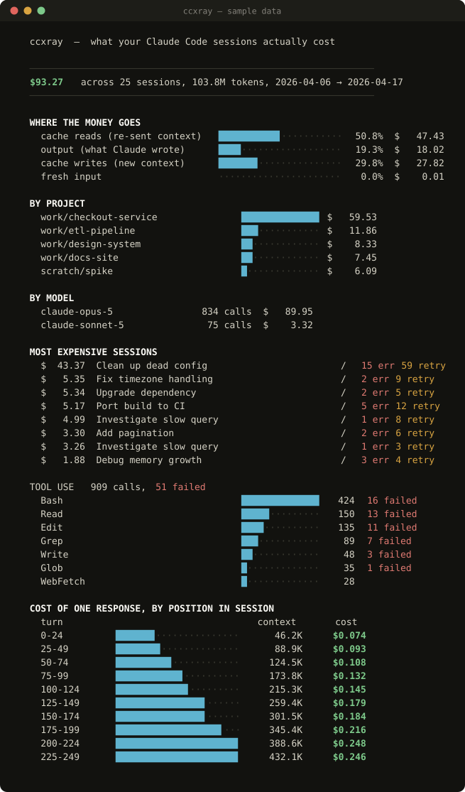

See what your Claude Code sessions actually cost — from the transcripts already sitting on your disk.
Get it on GitHub The Cost Playbook →
curl -O https://raw.githubusercontent.com/retropandamg-design/ccxray/main/ccxray.py
python3 ccxray.pyNo install, no signup, no API key, and no network calls of any kind.

Sample report, generated from the synthetic data bundled with the repo — not anyone's real sessions.
A language model has no memory between calls, so continuing a conversation means sending the whole conversation again. Claude Code does that on every turn. Prompt caching makes repeated context cheap — a tenth of the normal input rate — but it is still charged every turn.
So the cost of turn N scales with N, and a whole session scales with N². Finishing a task and starting a fresh session is meaningfully cheaper than appending to a long one. ccxray shows you your own version of that curve.
--anonymize masks project names,
session titles, file paths and MCP tool names (those embed the server name, which
says what you work on). Numbers are untouched. Use it before you screenshot
anything — your repo names are in those transcripts.
python3 make_sample.py sample/
python3 ccxray.py --dir sample/ccxray opens files under ~/.claude/projects, reads them, and
prints. No telemetry, no account, no upload. It is one readable Python file —
read it before you run it, as you should with anything that touches your
transcripts.